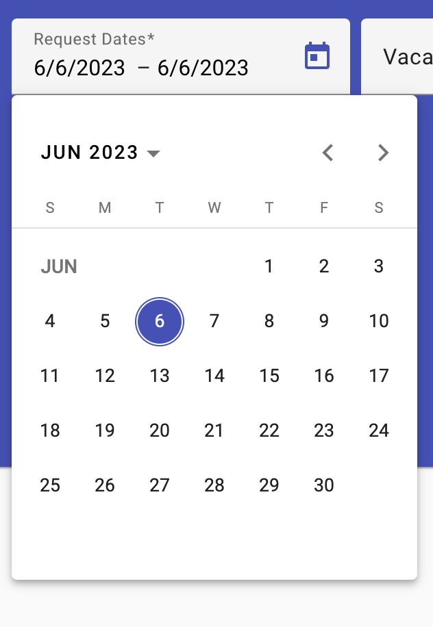
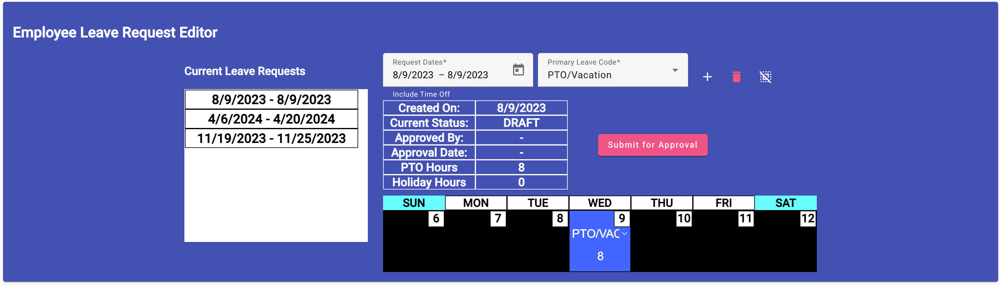
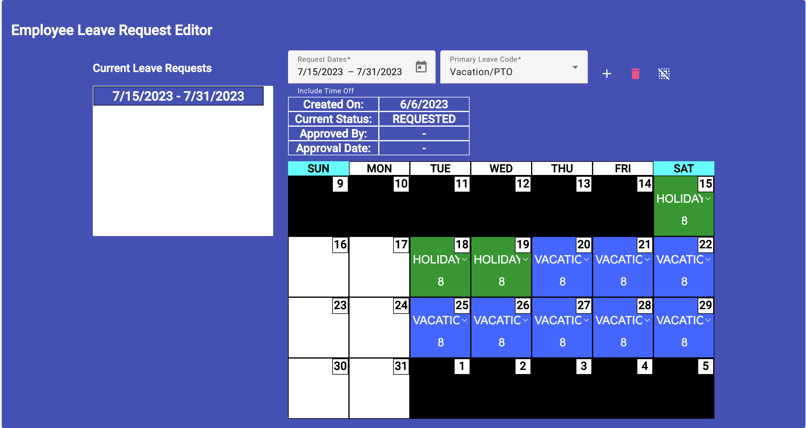
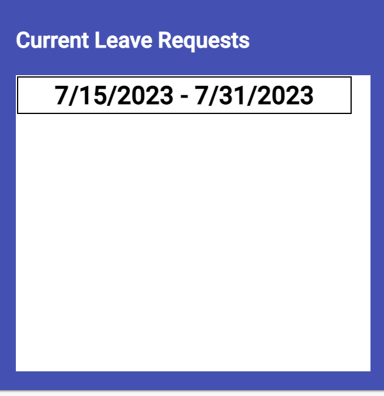
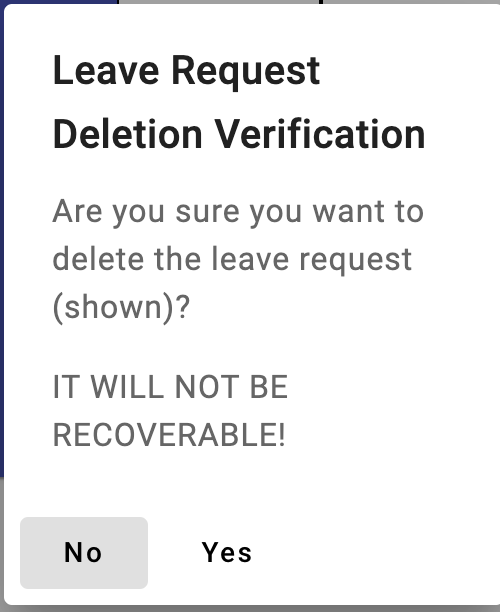

-

- Click on the "Request Dates" field's calendar icon on the right side. A calendar will display to allow you to select the inclusive dates for the leave. These must include regular days off, so that if your work schedule assignment changes the leave can be recalculated. Click on the first and last days of this period within the calendar. It should highlight the period selected.
- Next, select the "Primary Leave Code" to be used for the majority of the leave days displayed. You can select the leave code to use on individual days later.
- Lastly, use your mouse and click the "+" button to the right of the "Primary Leave Code" selector. This will send this basic information to the server and display the request for further editing, as shown below. 
-
Now this leave request is in "draft" mode and is only in the DRAFT
state. If you want to change some of the days to Holidays, you can
edit individual days by going to that day and changing the type of
leave to use/project for that day and the number of hours. When you
change it’s leave type the color scheme will probably change.
- Find the date you want to modify.
- If you want to change the leave code to be used, say holiday instead of vacation. The date's code display "Vacation" is a selector that allows you to select the code to use.
- If you want to change the leave's hours taken/scheduled. Click next to the number and edit it.
- All data is saved immediately after the change is made.
- To submit the request for approval, click the "Submit for Approval" button, which changes the status to requested and sends an email to all the approving authorities for approval. 
-
Editing a Leave Request - The assumption here is that you
changed your mind on the dates or codes to use for a date. You can
make changes to any leave request until the leave is actually taken,
even if it has been approved. (NOTE: If the leave request is
approved and you change the inclusive dates, the status returns to
"REQUESTED" and the dates are re-set to the primary leave code.)
-

- The first step is to select the desired leave request, you want to edit, from the "Current Leave Requests" list. This will fill in the leave request data for editing.
- Make any changes to the information you need to change, understanding the status restrictions/changes automatic to any change. The data is saved immediately after completed.
Note the leave request's status information. this tells you the date it was created, it's current status, and if approved, when and by whom is was approved.
- Select the leave request to delete from the "Current Leave Requests" list.
-
Click the Delete button (
 )
)
- Finally, you have to validate or confirm the deletion (see image below). 